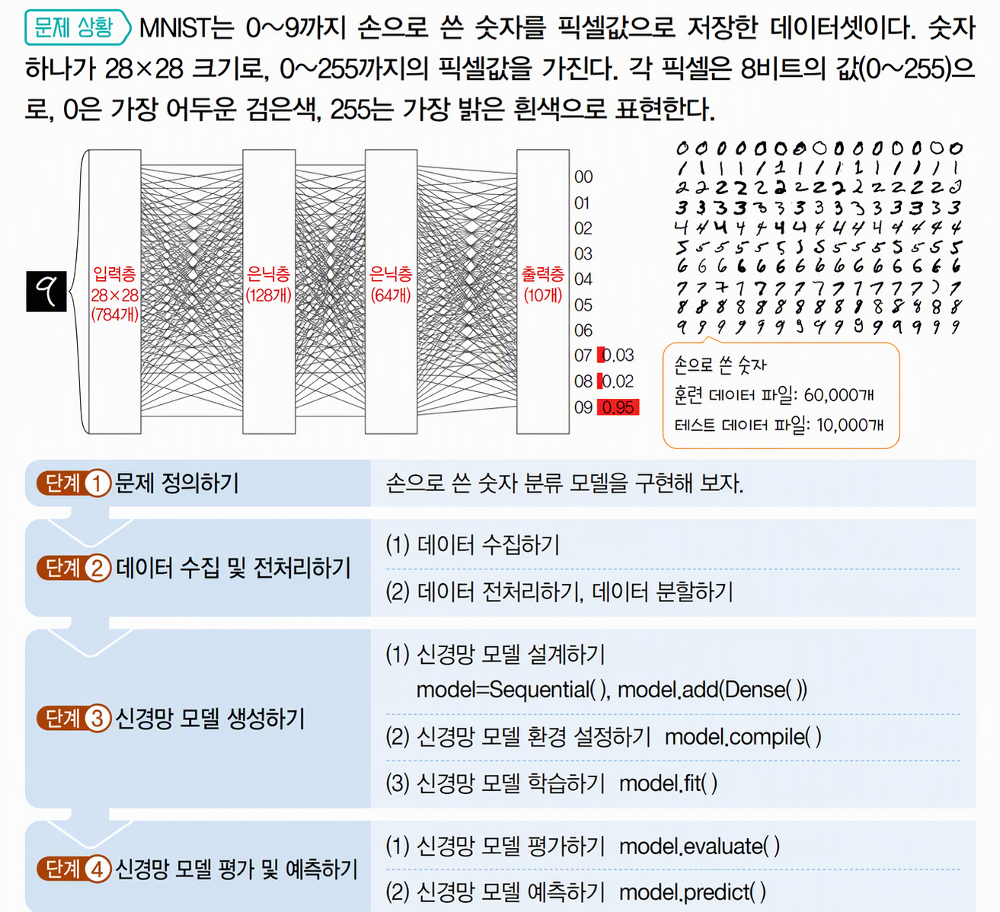
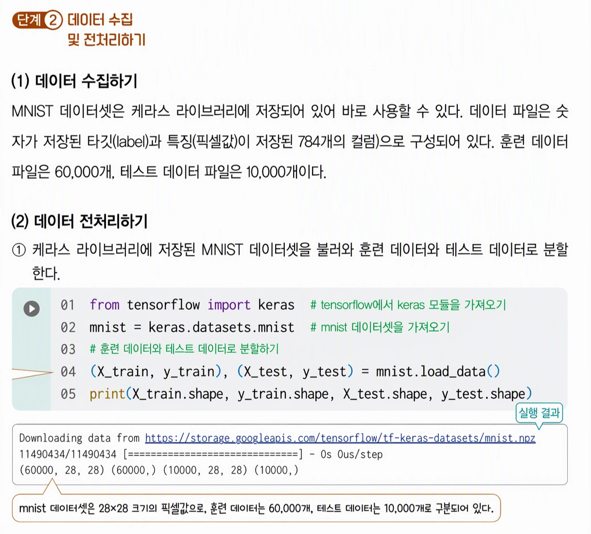
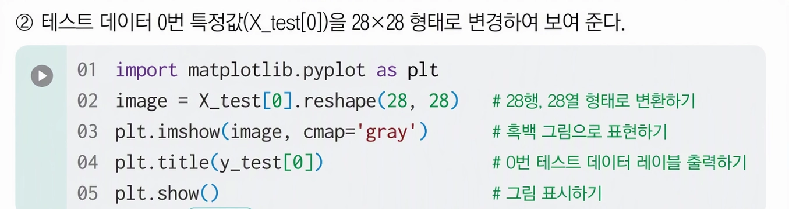
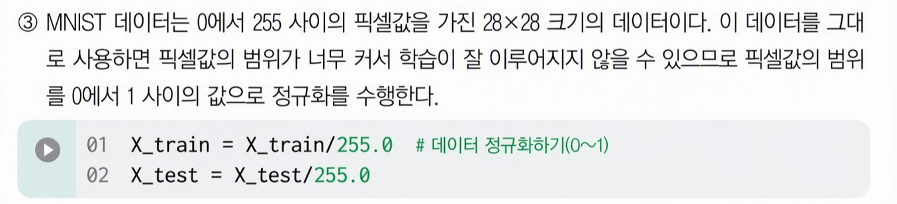
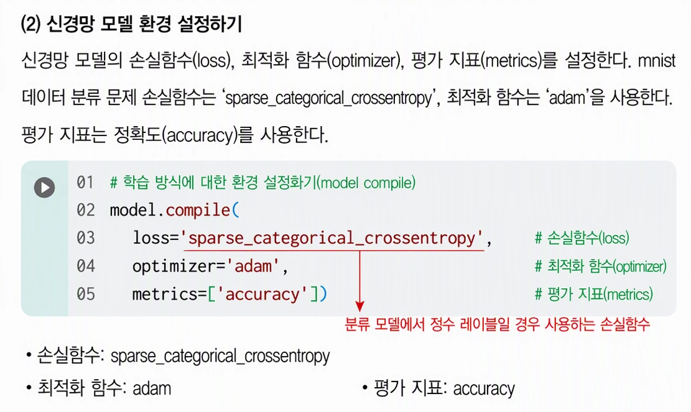
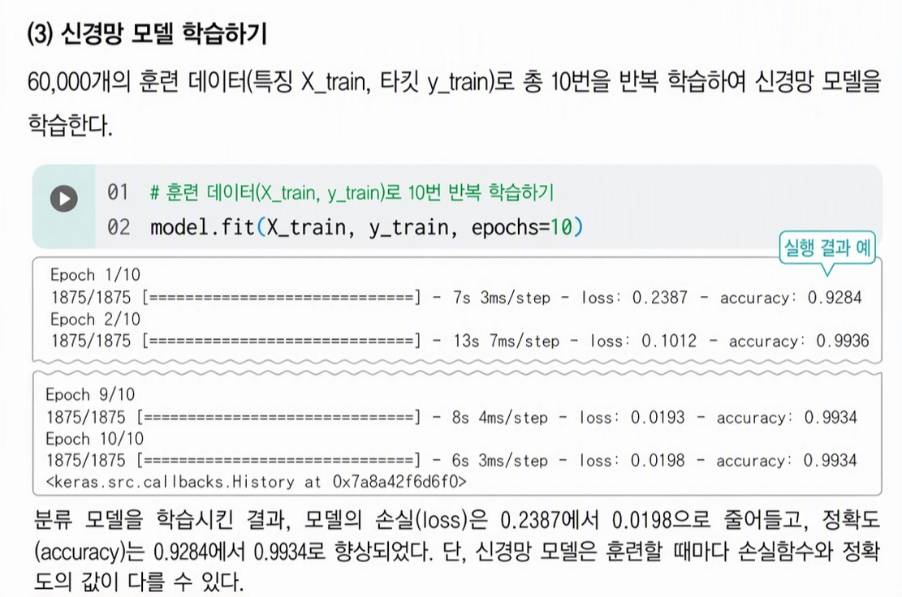
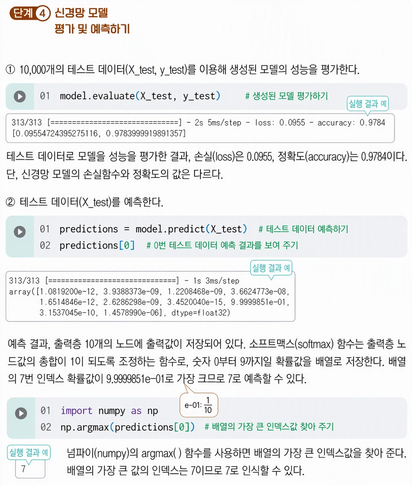

[17차시] 손으로 쓴 숫자 분류_MNIST
학습 목표

인공지능 학습의 표준 벤치마크
MNIST, CIFAR10, IMDB
1. MNIST (Modified National Institute of Standards and Technology)
- 딥러닝의 'Hello World'라 불리는 가장 기초적인 손글씨 숫자 데이터셋
- 구성 성분: 0부터 9까지의 숫자로 된 70,000개의 흑백 이미지(학습용 60,000개, 테스트용 10,000개)
- 이미지 규격: 28 * 28 픽셀의 흑백(Grayscale) 데이터
- 주요 용도: 이미지 분류 알고리즘의 기초 성능 검증 및 신경망 모델의 초기 학습용
- 특징: 배경과 글자 간의 대비가 뚜렷하며, 데이터 크기가 작아 연산 비용이 매우 낮음.


2. CIFAR-10 (Canadian Institute For Advanced Research)
- 사물 인식을 위한 대표적인 소형 컬러 이미지 데이터셋
- 구성 성분: 10개 클래스(비행기, 자동차, 새, 고양이, 사슴, 개, 개구리, 말, 배, 트럭)당 6,000개씩 총 60,000개의 컬러 이미지.
- 이미지 규격: 32 * 32 픽셀의 RGB 3채널 데이터
- 주요 용도: 합성곱 신경망(CNN) 성능 평가 및 사물 분류 알고리즘 연구
- 특징: 배경과 사물이 섞여 있어 MNIST보다 훨씬 높은 수준의 인지 능력을 요구함.
- 파생 버전: 100개의 세부 클래스로 구성된 CIFAR-100 데이터셋도 존재함.

3. IMDB (Internet Movie Database)
- 자연어 처리(NLP) 및 텍스트 감성 분석의 표준 데이터셋
- 구성 성분: 영화 리뷰 사이트에서 수집된 50,000개의 영어 텍스트 리뷰
- 데이터 분류: 긍정(Positive)과 부정(Negative)의 이진 분류(Binary Classification) 라벨링
- 주요 용도: 감성 분석(Sentiment Analysis), 텍스트 분류 모델 학습, 언어 모델링 테스트
- 특징: 구어체 표현과 복잡한 문장 구조로 텍스트 전처리 및 의미 파악 능력을 평가하기에 적합함.








분류 (Classification) 문제용 손실 함수
① Categorical Crossentropy (categorical_crossentropy)
- 개념: 다중 클래스 분류 문제에서 타깃 라벨이 원-핫 인코딩(One-Hot Encoding) 형태로 되어 있을 때 사용함. (예:
[0, 1, 0])
- 특징:
sparse_categorical_crossentropy와 기능 및 수학적 계산 방식은 동일하지만, 입력 라벨 형태의 차이만 존재함.
- 수식:
② Binary Crossentropy (binary_crossentropy)
- 개념: 이진 분류(Binary Classification) 문제(예: Pass/Fail, 스팸/정상)에 사용됨.
- 특징: 출력층 활성화 함수로 주로 Sigmoid를 사용하며, 모델의 예측값(0~1 사이 확률)이 실제 클래스(0 또는 1)와 얼마나 가까운지 측정함.
- 수식:
회귀 (Regression) 문제용 손실 함수
① 평균 제곱 오차 (MSE, Mean Squared Error)
- 개념: 예측값과 실제값의 차이를 제곱하여 평균을 낸 손실 함수(
mean_squared_error)
- 특징: 오차가 클수록 제곱으로 인해 패널티가 급격히 커지므로, 이상치(Outlier)에 민감함.
- 수식:
② 평균 절대 오차 (MAE, Mean Absolute Error)
- 개념: 예측값과 실제값 차이의 절대값을 평균 낸 손실 함수(
mean_absolute_error)
- 특징: MSE에 비해 이상치의 영향을 적게 받으며, 직관적인 오차 단위 측정이 가능함.
- 수식:
③ Huber Loss
- 개념: MSE와 MAE의 장점을 결합한 손실 함수
- 특징: 오차가 작은 구간에서는 MSE처럼 작동하여 미분 및 최적화가 용이하고, 오차가 큰 구간에서는 MAE처럼 작동하여 이상치의 영향을 줄여줌.
- 유래: 1964년에 처음 제안한 Swiss 통계학자 피터 휴버(Peter J. Huber)의 이름에서 유래함.
| 문제 유형 | 정답(Label) 형태 | 추천 손실 함수 (loss=) |
|---|---|---|
| 이진 분류 | 0 또는 1 | binary_crossentropy |
| 다중 분류 | 정수형 (0, 1, 2, ...) | sparse_categorical_crossentropy |
| 다중 분류 | 원-핫 인코딩 ([1,0,0]) | categorical_crossentropy |
| 회귀 (일반) | 연속형 실수값 | mse (Mean Squared Error) |
| 회귀 (이상치 있음) | 연속형 실수값 | mae 또는 huber |





[추가 활동] 내가 쓴 숫자 분류해 보기
1. 숫자 쓰기
① 윈도(windows)의 기본 프로그램인 ‘그림판’을 클릭해서 연다.

② 그림판의 ‘펜(붓)’ 기능을 이용해서 숫자 ‘13’을 쓰고 ‘13.png’로 저장한다.

2. MNIST 신경망 모델 파일 준비하기
MNIST 신경망 모델 파일을 준비한다. (mnist_model.h5)
3. 구글 코랩 파일에 숫자와 신경망 모델 파일 업로드하기
① 크롬 브라우저에서 구글 계정으로 로그인한다.
② 구글 코랩 파일 저장소에 신경망 모델 파일(mnist_model.h5)을 불러오고, 숫자 이미지(13.png) 파일을 업로드한다.
③ 신경망 모델명은 ‘new_model’로 한다.
4. 내가 쓴 숫자 예측하기
코드를 실행(▶)시키면서 신경망 모델이 내가 쓴 숫자를 잘 예측하는지 확인해 보자.
① 이미지를 읽고 회색조로 변환한 후 화면에 표시한다.
② 숫자를 인식한다.


③ 신경망 모델(new_model)로 숫자를 예측한다. 예측한 결과는 숫자 이미지 제목(title)에 표시된다.

5. 코딩하기
import cv2
import matplotlib.pyplot as plt
from tensorflow import keras
# 1. 모델 및 이미지 로드
new_model = keras.models.load_model('mnist_model.h5')
image = cv2.imread('13.png')
# 2. 이미지 정보 확인
print(f'이미지 크기: {image.shape}')
# 3. 이미지 시각화 (원본 - BGR을 RGB로 변환)
plt.imshow(cv2.cvtColor(image, cv2.COLOR_BGR2RGB))
plt.title('Original (RGB)')
plt.show()
# 4. 이미지 시각화 (그레이스케일 변환)
grey = cv2.cvtColor(image, cv2.COLOR_BGR2GRAY)
plt.imshow(grey, cmap='gray')
plt.title('Grayscale')
plt.show()
6. 코딩하기
(1) 이미지 선명화 및 윤곽선 검출
- 흑백 반전 (
cv2.threshold): 배경을 검은색(0), 글씨를 흰색(255)으로 명확히 구분하는 이진화 작업
- 윤곽선 검출 (
cv2.findContours): 흰색 영역(숫자)의 바깥 테두리 선 탐지
(2) 위치 정렬 및 숫자 영역 추출
- 좌우 정렬 (
sorted): 탐지된 윤곽선들을 x좌표 기준으로 정렬하여 왼쪽 숫자부터 차례대로 처리
- 노이즈 제거 (
if w > 100 ...): 일정 크기 이하의 작은 점이나 잡티 제외
- 영역 표시 및 잘라내기 (
cv2.rectangle, Crop): 원본 이미지에 사각형 경계 표시 후 해당 숫자 영역만 싹둑 잘라냄.
(3) AI 모델 맞춤형 규격화
- 크기 조절 (
cv2.resize): 잘라낸 숫자를 18×18 픽셀 크기로 일괄 축소(확대)
- 테두리 여백 추가 (
np.pad): 상하좌우 5픽셀씩 검은 여백을 붙여 최종 28×28 픽셀 크기 완성. (MNIST 모델 입력 요구 표준 규격 적용)
(4) 결과 시각화
- 개수 및 상자 출력: 전체 숫자의 개수 출력 및 사각형이 표시된 원본 이미지 시각화
- 전처리 이미지 확인: 28×28 크기로 정돈된 개별 숫자 이미지들을 화면에 정렬하여 표시
import numpy as np
# 1. 회색조 이미지를 이진 이미지로 변환
ret, thresh = cv2.threshold(grey.copy(), 70, 255, cv2.THRESH_BINARY_INV)
# 2. 이진 이미지에서 윤곽을 찾음
contours, hierarchy = cv2.findContours(thresh, cv2.RETR_TREE, cv2.CHAIN_APPROX_SIMPLE)
# 3. 윤곽 개수 출력
print('윤곽 개수:', len(contours))
# 4. 전처리된 숫자 저장용 빈 리스트 초기화
preprocessed_digits = []
# 5. 숫자 개수 카운터 초기화
countImage = 0
# 6. 각 윤곽에 대해 반복
for c in contours:
# 7. 각 윤곽의 경계 상자 정보를 추출
x, y, w, h = cv2.boundingRect(c)
# 8. 작은 윤곽(노이즈 방지) 필터링
if w > 10 and h > 10:
# 9. 경계 상자 좌표 출력
print('경계 상자:', x, y, w, h)
# 10. 숫자 개수 증가
countImage += 1
# 11. 탐지된 숫자 주위에 사각형 그리기
cv2.rectangle(image, (x, y), (x + w, y + h), color=(255, 0, 0), thickness=2)
# 12. 이진 이미지에서 숫자 영역 추출
digit = thresh[y:y + h, x:x + w]
# 13. 숫자 이미지 크기 조정
resized_digit = cv2.resize(digit, (18, 18))
# 14. 크기 조정된 숫자 이미지에 0으로 패딩
padded_digit = np.pad(resized_digit, ((5, 5), (5, 5)), 'constant', constant_values=0)
# 15. 패딩된 숫자 이미지 모양 출력
#print('패딩된 숫자 모양:', padded_digit.shape)
# 16. 전처리된 숫자 리스트에 추가
preprocessed_digits.append(padded_digit)
# 17. 탐지된 숫자 개수 출력
print('총 숫자:', countImage)
# 18. 그래프 크기 조정
plt.rcParams['figure.figsize'] = (4, 4)
# 19. 원본 이미지에 경계 상자 표시하기
plt.imshow(image, cmap=plt.cm.gray)
plt.show()
# 20. NumPy 배열로 변환하기
inp = np.array(preprocessed_digits)
# 21. 숫자 개별로 보여주기
for i in range(len(inp)):
plt.imshow(inp[i], cmap='gray', interpolation='none')
plt.show()

코드 세부 해설
import cv2: 이미지 처리 라이브러리인 OpenCV를 불러옴.
import matplotlib.pyplot as plt: 이미지나 그래프를 화면에 출력해 주는 라이브러리를 불러옴.
import numpy as np: 행렬 및 배열 연산을 쉽게 처리해 주는 수학 라이브러리를 불러옴.
cv2.threshold(...): 회색조 이미지(grey)에서 밝기 값이 70보다 크면 검은색(0), 작으면 흰색(255)으로 바꾸는 이진화 작업 (글자를 흰색으로 반전시킴)
_, thresh: 함수 결과 중 첫 번째 반환값(임계값)은 생략(_)하고, 변환된 이진화 이미지 결과물만thresh에 저장
cv2.findContours(...): 흰색 글자 영역의 가장 바깥쪽 테두리(윤곽선)들을 찾아냄.
contours, _: 찾은 윤곽선 정보 목록을contours변수에 저장하고, 필요 없는 계층 구조 정보(_)는 무시
preprocessed_digits = []: 전처리를 마친 숫자 이미지들을 담아둘 빈 리스트 생성
image_draw = image.copy(): 원본 이미지에 사각형을 그리면 원본이 훼손되므로, 복사본 이미지를 새로 하나 만들어 둠.
sorted(...): 추출된 윤곽선 위치들을 x좌표 기준(cv2.boundingRect(c)[0])으로 오름차순 정렬하여, 왼쪽 숫자가 먼저 처리되도록 순서를 맞춤.
for c in contours:: 정렬된 윤곽선 목록에서 윤곽선(c)을 하나씩 꺼내어 아래 작업을 반복
cv2.boundingRect(c): 해당 윤곽선을 감싸는 감싸는 사각형의 시작 좌표(x, y)와 가로 폭(w), 세로 높이(h)를 구함.
if w > 10 and h > 10:: 가로와 세로 크기가 모두 10픽셀보다 큰 경우만 진짜 숫자로 판단. (작은 점이나 먼지 같은 노이즈 제거)
print(...): 감지된 숫자의 위치 좌표와 크기를 화면에 텍스트로 출력
cv2.rectangle(...): 사각형 그리기 함수로, 복사본 이미지(image_draw)의 숫자 위치 주변에 두께 2짜리 빨간색 사각형을 그림.
digit = thresh[...]: 이진화 이미지에서 y부터 y+h까지, x부터 x+w까지의 숫자 영역만 딱 잘라냄.
cv2.resize(...): 잘라낸 숫자 이미지를 가로 18픽셀, 세로 18픽셀 크기로 확대 또는 축소.
np.pad(...): 18×18 크기 이미지 상하좌우 둘레에 5픽셀씩 검은색(0) 여백을 붙여 28×28 픽셀 크기로 만듦. (MNIST AI 모델 입력 크기에 맞춤)
preprocessed_digits.append(...): 최종 완공된 28×28 숫자를 결과 리스트에 차곡차곡 추가
print(...): 찾아낸 전체 숫자가 총 몇 개인지 개수를 출력
plt.figure(...): 그래프(그림) 틀을 가로 6, 세로 3인치 크기로 만듦.
plt.imshow(...): 붉은 상자가 그려진 이미지를 BGR에서 RGB 색상 체계로 바꿔 화면에 띄움.
plt.title(...): 그림 상단에 ‘Detected Bounding Boxes’라는 제목을 붙임.
plt.axis('off'): 테두리의 눈금 축(x축, y축)을 숨김.
plt.show(): 지금까지 설정한 그림을 화면에 실제로 출력함.
plt.figure(...): 잘라낸 숫자를 보여줄 그림 틀을 새로 만듦.
for i, digit_img in enumerate(...): 전처리된 숫자 이미지들을 순번(i)과 함께 하나씩 꺼냄.
plt.subplot(1, N, i + 1): 한 화면을 1행 N열로 나누어,i + 1번째 위치에 그림 칸을 지정
plt.imshow(..., cmap='gray'): 해당 개별 숫자 이미지를 흑백 컬러맵으로 설정하여 띄움.
plt.title(...): 각 칸 상단에 ‘Digit 1’, ‘Digit 2’ 형태의 제목을 부착
plt.axis('off'): 각 숫자 이미지의 눈금 축을 숨김.
plt.tight_layout(): 이미지 간격이 겹치지 않게 여백을 알아서 깔끔하게 정돈
plt.show(): 전처리 완료된 모든 숫자를 한눈에 화면에 보여줌.
[개별 추가 과제] MNIST 손글씨 인식 프로젝트
| 학번 | 문제 유형 | 추가 실습 과제 | 예상 실행 코드 및 실습 방법 |
|---|---|---|---|
| 01 | 파라미터 변경 | 반복 학습 횟수(epochs)를 10회에서 3회로 줄여보고 예측 정확도(accuracy) 비교해 보기 | model.fit(X_train, y_train, epochs=3) |
| 02 | 파라미터 변경 | 반복 학습 횟수(epochs)를 20회로 늘려보았을 때 accuracy와 loss의 변화 관찰하기 | model.fit(X_train, y_train, epochs=20) |
| 03 | 시각화 | 내가 직접 쓴 숫자 이미지의 가로, 세로 픽셀 해상도 크기(shape) 출력해 보기 | print(image.shape) |
| 04 | 이미지 전처리 | 회색조(Grayscale) 변환 시 임계값(thresh) 기준을 70에서 120으로 높여 글씨 두께 변화 보기 | _, thresh = cv2.threshold(grey, 120, 255, cv2.THRESH_BINARY_INV) |
| 05 | 이미지 전처리 | 숫자 주위에 검은색 여백을 추가하는 np.pad의 패딩 두께를 5에서 10으로 늘려보기 | padded_digit = np.pad(resized_digit, ((10, 10), (10, 10)), 'constant') |
| 06 | 데이터 탐색 | MNIST 테스트 데이터 중 0번이 아닌 5번 데이터(X_test[5])를 흑백 이미지로 출력해 보기 | plt.imshow(X_test[5], cmap='gray') |
| 07 | 시각화 | 잘라낸 개별 숫자 박스들을 출력할 때 cmap='gray' 대신 cmap='viridis' 옵션 적용해 보기 | plt.imshow(digit_img, cmap='viridis') |
| 08 | 데이터 변환 | 픽셀 정규화 단계를 나눗셈(255.0) 대신 생략해보고 학습했을 때 오차(loss) 비교하기 | # X_train = X_train / 255.0 (주석 처리 후 실행) |
| 09 | 모델 구조 변경 | 신경망 은닉층의 노드 수를 (128, 64)에서 (64, 32)로 줄여서 가볍게 만들어 보기 | model.add(Dense(64, activation='relu')) model.add(Dense(32, activation='relu')) |
| 10 | 이미지 전처리 | 원본 손글씨 이미지를 좌우 반전(cv2.flip) 시킨 후 숫자가 올바르게 인식되는지 확인하기 | flipped = cv2.flip(image, 1) |
| 11 | 코드 응용 | 넘파이 np.argmax()를 사용해서 AI가 예측한 확률 중 가장 높은 숫자가 몇 번인지 출력하기 | print('예측한 숫자:', np.argmax(predictions[0])) |
| 12 | 활동 중심 | 흰 종이에 숫자를 2개가 아닌 3개(예: 1, 2, 3) 작성하여 이미지 업로드 후 경계 상자 개수 확인하기 | cv2.findContours()로 검출된 윤곽선 개수 확인 |
| 13 | 시각화 | 경계 상자(Bounding Box)를 그릴 때 상자 색상을 빨간색 대신 초록색 (0, 255, 0)으로 바꿔보기 | cv2.rectangle(image_draw, (x, y), (x+w, y+h), (0, 255, 0), 2) |
| 14 | 모델 재호출 & 평가 | 저장된 모델(mnist_model.h5)을 불러온 후 전체 데이터 대신 앞의 100개 테스트 데이터만 평가하여 전체 평가 결과와 정확도 변화 비교하기 | loaded_model = keras.models.load_model('mnist_model.h5')loaded_model.evaluate(X_test[:100], y_test[:100]) |
| 15 | 활동 중심 | 두꺼운 펜 대신 얇은 볼펜으로 숫자를 썼을 때 AI 모델이 올바르게 인식하는지 테스트하기 | 얇은 글씨체의 이진화 결과 및 인식 성능 비교 |